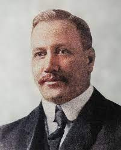

O voleibol foi inventado em 9 de Fevereiro de 1895 por William George Morgan nos Estados Unidos da América. O objetivo de Morgan, que trabalhava na ACM de Holyoke no Massachusetts, era criar um esporte de equipes sem contato físico entre os adversários de modo a minimizar os riscos de lesão.
William George Morgan (Lockport, 23 de janeiro de 1870 — Lockport, 27 de dezembro de 1942) foi o inventor do voleibol, originalmente chamado "Mintonette", nome derivado do jogo badminton que ele resolveu mudar para melhor refletir a natureza do esporte. Nasceu em Lockport, Nova Iorque
William George Morgan, chefe de Eduvação Física na YMCA em Richmond, Virginia é conhecido por criar o jogo de vôlei, um jogo que hoje em dia é conhecido mundialmente
Conheça as regras e as posições